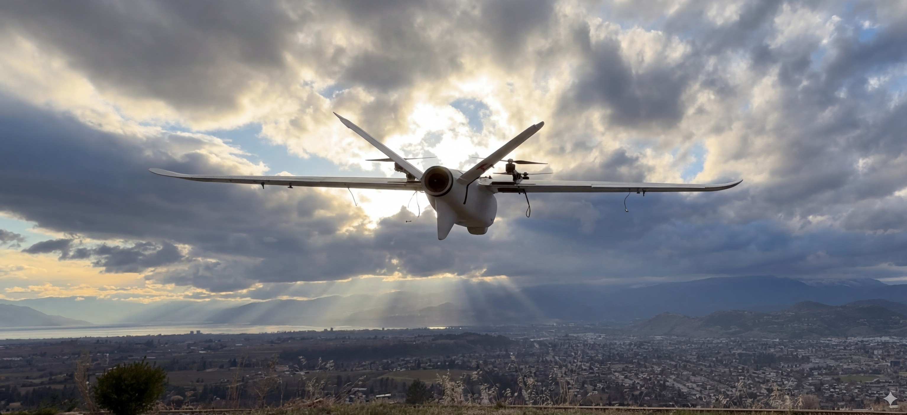
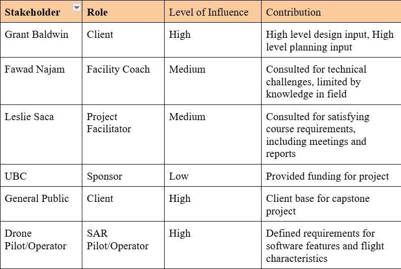
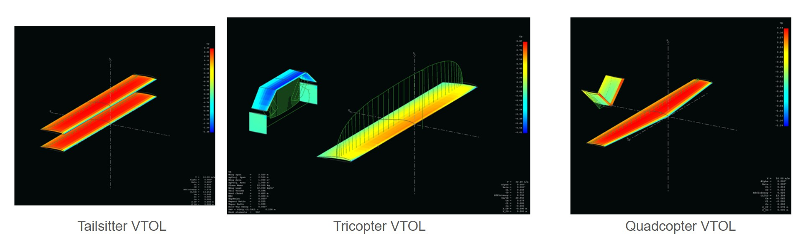
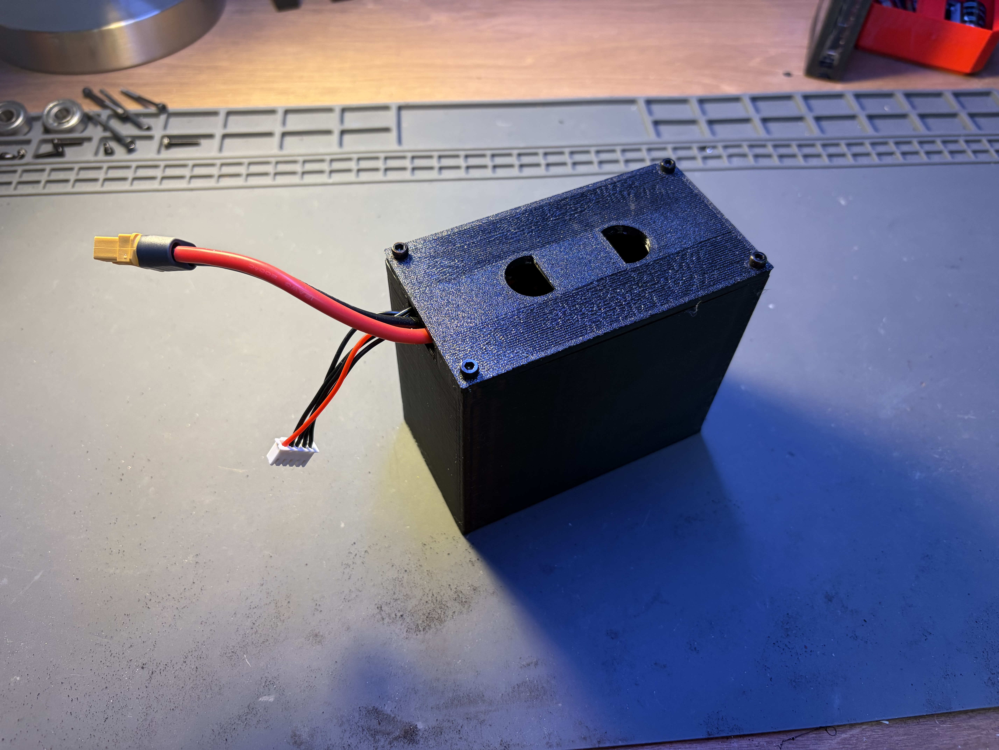
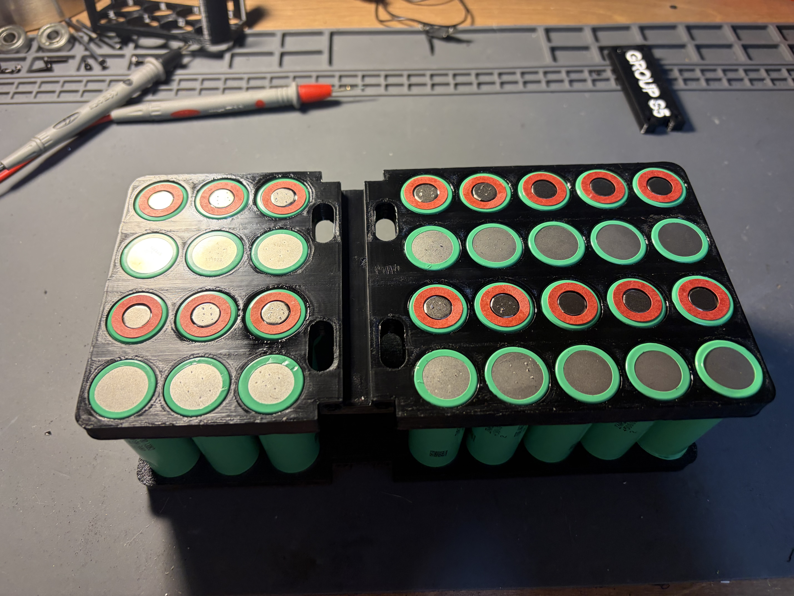

Search & Rescue UAV VTOL Relay
A fixed-wing VTOL drone designed for North Shore Rescue (Vancouver, BC) to extend communication range and aid coordination in remote mountain terrain, maximizing flight time while staying portable, lightweight, and field-rugged.

What We Built — and Why
For the non-engineer: When rescue teams search for missing persons in rugged mountain terrain, radio communication often fails, terrain blocks signals and distances quickly exceed handheld radio range. Our team built a drone that acts as a flying relay station: it takes off vertically like a helicopter, transitions to efficient fixed-wing flight, and hovers in position to bridge communication gaps between rescuers on the ground.
Think of it like a cell tower, but one that can be deployed anywhere in minutes, launched from a backpack, and kept aloft far longer than a conventional quadcopter. Our primary client was North Shore Rescue, one of Canada's busiest mountain rescue teams, based out of Vancouver, BC.
Core Outcome: A lightweight, portable VTOL UAV platform optimized for maximum flight endurance, capable of acting as a communication relay in remote search and rescue environments. Complete with a custom-designed battery system for peak power delivery and thermal performance.
Why We Did It
Project Objectives
- Maximize airborne flight time to extend relay coverage duration
- Design for portability — the system must be backpackable by rescue personnel
- VTOL capability for launch from confined or rough terrain (no runway needed)
- Robust construction to withstand mountain weather and rough handling
- Optimized power system to support extended missions on a single charge
Design Constraints
- Weight: Must be carryable in the field — minimizing total mass was critical
- Weather: Operational in cold, wet, high-altitude BC conditions
- Budget: Capstone-scale academic budget with real component costs
- Airworthiness: Safe, stable flight characteristics with reliable VTOL transition
- Battery: Cells selected for high energy density and safe thermal operation

How We Got There
The path from problem to flying prototype was iterative.
Problem Definition & Stakeholder Engagement
We began by engaging with North Shore Rescue to understand their operational environment and communication dead zones, terrain types, deployment workflows, and what existing solutions fail to address. This shaped our requirements document and confirmed that flight endurance was the single most critical design parameter, since a relay drone that runs out of battery mid-operation is worse than no relay at all.
Airframe Concept Selection
We evaluated several UAV configurations like multirotor, flying wing, conventional fixed-wing, and VTOL hybrids. Using a weighted decision matrix against our requirements. The VTOL fixed-wing (quadcopter) configuration was selected because it combined the vertical takeoff simplicity of a multirotor with the long-range efficiency of fixed-wing flight.
Airfoil selection was informed by FEM analysis and aerodynamic calculations to optimize lift-to-drag ratio at our target cruise speed and altitude range. We modelled airflow behaviour digitally before committing to any physical build.
Balancing the competing demands of VTOL lift (needs powerful motors and large props) against efficient fixed-wing cruise (needs lightweight, streamlined design) in a single airframe.
Carefully optimized motor placement and prop sizing for each flight phase, accepting a trade-off in hover efficiency in favour of better cruise endurance. This is aligned with our primary objective.

CAD Design & Structural Iteration
Multiple CAD iterations of the VTOL airframe were completed in Fusion 360. Each iteration refined the structural layout, motor mount geometry, and internal component packaging. Getting the VTOL assembly geometry right — particularly the transition between hover and forward flight posture required several design revisions before achieving satisfactory flight characteristic predictions.
Battery System Design — My Primary Contribution
The battery system was my primary individual responsibility on this project. Designing the right power system for a long-endurance UAV is non-trivial and cell selection, pack geometry, thermal management, and structural fitment all interact.
Cell Selection & Pack Design
Cell selection began with modelling expected load profiles during hover, transition, and cruise phases. I evaluated multiple lithium-polymer and lithium-ion cell chemistries against energy density, discharge rate (C-rating), and weight targets. The final cells were selected to maximize capacity while staying within the continuous discharge current demanded by the motor system during peak hover load.
The 3D-printed cell casing (designed and iterated in FreeCAD) went through multiple revisions. The primary driver of each revision was thermal performance: under sustained discharge, cells generate heat, and inadequate cooling degrades capacity and cycle life. I progressively refined the casing geometry to introduce airflow channels and improve contact surface area, ultimately producing a pack that fit within the airframe envelope and stayed within safe operating temperatures during flight testing.
Early cell casing designs trapped heat during high-current discharge, causing cell temperature to rise beyond comfortable operating margins. This risked reduced capacity and premature degradation.
Redesigned the casing with integrated airflow channels between cells, allowing passive cooling from the aircraft's forward airspeed during cruise. Fitment geometry was also refined for snug, vibration-resistant mounting inside the fuselage.


Assembly, Integration & First Flight
With the battery system validated and all subsystems assembled, the VTOL was integrated and prepared for flight testing. The power system performed as designed, delivering the required current during hover without thermal issues, and providing the endurance margins needed to meet our flight time objective. The project culminated in a successful takeoff, confirming the system was flight-ready.

Contributions & Ownership
On a team of six, I was primarily responsible for the power system and contributed to overall design and documentation. I also helped a lot in the flight avionic's
Battery / Electrical System Lead
Sole designer and builder of the UAV's battery pack including cell selection based on load analysis, multiple iterations of the 3D-printed cell casing in FreeCAD, thermal management optimization, and final pack assembly. Also contributed to component selection discussions for the broader electrical system.
Design Documentation & Reporting
Contributed to the team's technical report and design documentation. Participated in stakeholder presentations and design reviews, communicating battery system decisions and trade-offs to both the project supervisor and the North Shore Rescue client.
Results & Impact
Key Results
- Battery system delivered required current during hover phase without exceeding thermal limits
- Cell casing iterations successfully improved thermal management across three design revisions
- Final battery pack achieved target energy capacity within the airframe weight budget
- VTOL successfully achieved first takeoff — project primary objective met
- Design delivered to North Shore Rescue as a functional proof-of-concept relay platform
What Worked Well
The iterative approach to battery casing design paid off significantly as each revision produced measurable improvement in thermal performance. Committing early to a quantified energy budget kept the battery design anchored to real constraints rather than optimistic estimates, which meant fewer surprises at integration.
What We'd Do Differently
With more time, active thermal monitoring during flight (cell-level temperature sensors feeding back to the flight controller) would give real operational data to validate the passive cooling design. We'd also explore a modular battery interface to allow hot-swap of packs in the field. Additional software work within the VTOL for position holding and autonomous capabilities is an important future consideration as well.
See More of My Work
More projects, documentation, and design files on my personal portfolio site.